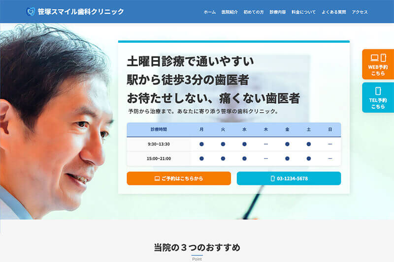

Worksに戻る
笹塚

Works — Corporate Site
笹塚スマイルクリニック架空の歯科医院サイト
架空の歯科医院のコーポレートサイト。安心感と、ユーザーが迷わず予約できる導線設計を重視して制作しました。

Purpose制作の目的
「忙しくてなかなか歯医者に通えない」という声に応えるため、駅直結・夜21時まで診療・土曜診療という強みを、誰にでも伝わりやすく、安心感を持ってもらえるように設計しました。
主なターゲットは、平日の日中に通院が難しいビジネスパーソンや共働き世帯、近隣のシニア層。こうした層が「ここなら通えそう」と自然に感じてもらえることを目標にしています。
Designデザインについて
ファーストビューで「笹塚駅すぐ」「21時まで診療」「土曜も診療」といった利便性を、キャッチコピーとアイコンで直感的に伝達。白をベースに水色をアクセントとして、清潔感と安心感のある印象に仕上げました。
情報の流れを「診療時間 → 特徴 → 医院紹介 → 診療メニュー → お知らせ → 予約導線」と整理し、初めてのユーザーでも迷わず目的の情報にたどり着ける構成に。ボタンサイズや可読性に配慮したスマホファースト設計としています。
Codingコーディングについて
スクロールしても常に表示される固定ヘッダーでナビゲーションの利便性を高めつつ、ページ内各所に「予約ボタン」を複数配置し、いつでもアクションにつなげられる導線に。各セクションはセマンティックなタグでマークアップしています。
スマートフォンではタップしやすいよう調整し、文字サイズや余白も最適化。レスポンシブ対応で、PC・タブレット・スマホすべてで快適に閲覧できる設計としました。
この作品の制作意図や工夫について、詳しくお話しできます。お気軽にご連絡ください。
お問い合わせ